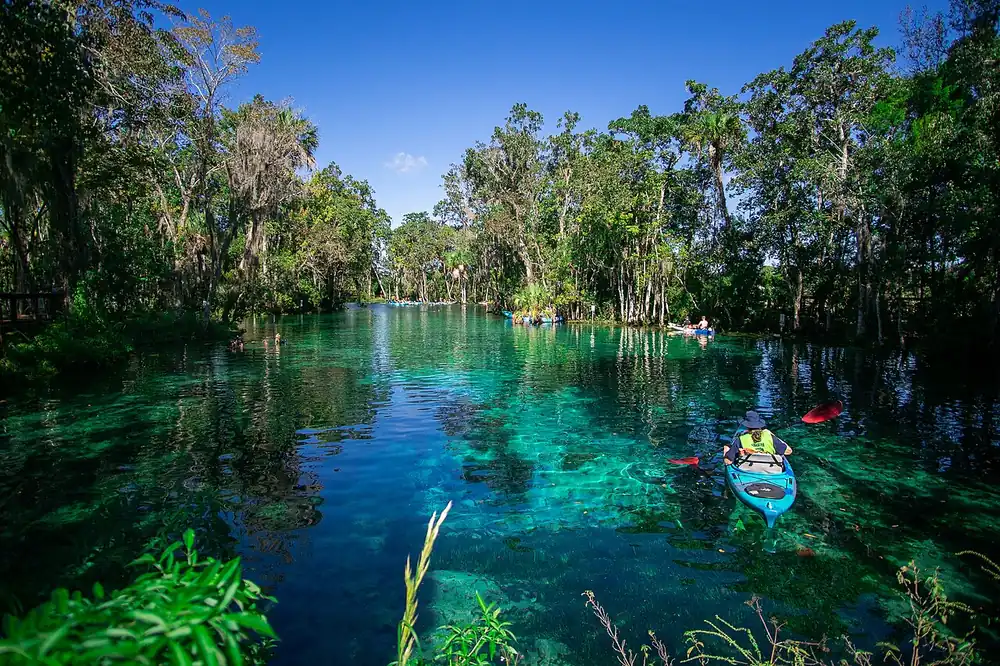

Crystal River — Three Sisters Springs
Floride, États-Unis · snorkeling, kayak, paddle

Sources d’eau claire reliées à Kings Bay, au cœur du refuge national de Crystal River. En hiver, des centaines de lamantins viennent s’y réchauffer, et la baie fait partie des rares endroits où l’on peut les observer dans l’eau.
- Lieu
- Floride, États-Unis
- Niveau
- Débutant
- Activités
- snorkeling, kayak, paddle
- Type d'eau
- inland
- Coordonnées
- 28.89, -82.59 (position approximative du secteur)
Dangers à connaître
- Sanctuaires fermés et accès aux sources restreint pendant la saison des lamantins (en gros de mi-novembre à fin mars) : horaires et règles à vérifier localement.
- Circulation de bateaux dans Kings Bay : reste dans les zones balisées.
- Déranger un lamantin est une infraction fédérale.
Le conseil d'Ocean Buddy
Pour nager près des lamantins, passe par un opérateur agréé et reste en observation passive : on ne touche pas, on ne poursuit pas, on flotte en surface.
Ouvrir dans Ocean Buddy Télécharger sur l'App Store
Source : Fiche Ocean Buddy · septembre 2026 · à vérifier localement.